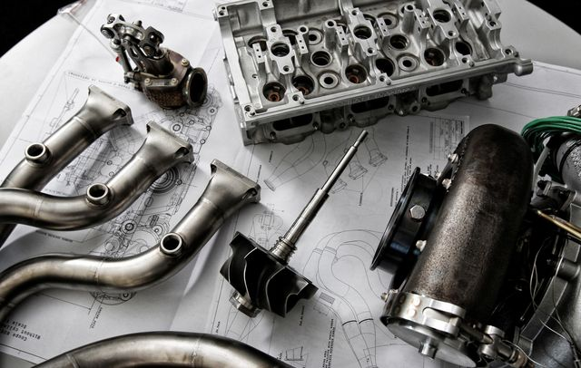

Типы двигателей

Первый полноценный прототип двигателя внутреннего сгорания был сконструирован в далёком 1806 году, который принадлежал братьям Ньепсье. После этого важного исторического факта было недолгое затишье. Но, в конце 19 века три легендарным немца положили старт автомобилестроению — Николас Отто, Готлиб Даймлер и Вильгельм Майбах. После этого двигатели внутреннего сгорания получили много модификаций и вариантов, которые используются по сегодняшний день. Рассмотрим, какие существуют виды автомобильных ДВС, а также укажем типы двигателей ...